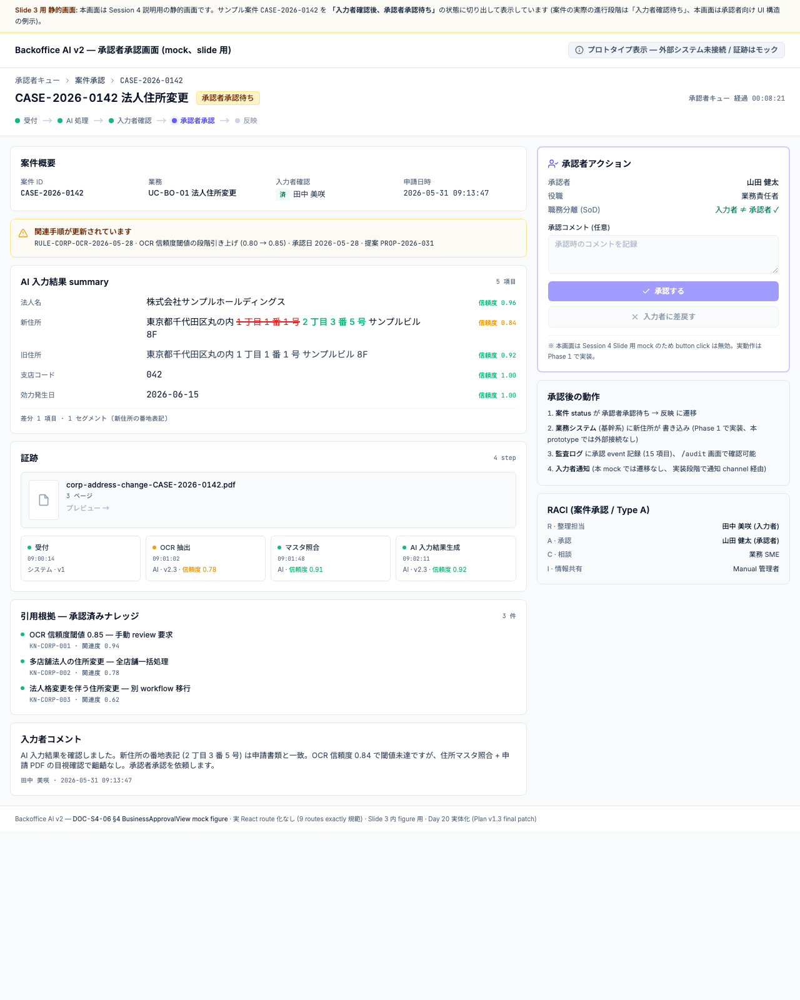

2026-06-12 · 60 min · audience 10 名
構想共有 — 差戻しを、次の正解手順に変える仕組み
Slide 1 / 8 · 5 min
例外対応の難しさ + 規制対応の重さで実装が止まる。
→ 高リスク
人手不足 + 退職リスクで現状維持不能。
→ 持続不可能
第 3 の道はないか?
Slide 2 / 8 · 5 min · Core message
Top message
AI を一気に自動化するのではなく、現場の差戻しを毎日の改善提案に変える
承認された手順だけを AI に覚えさせる
減らすのは確認作業。残すのは手順変更と AI 設定変更の承認
Slide 3 / 8 · 5 min · 案件承認 4-eyes
AI 結果の accept / sendback (差戻し)
入力者確認後の最終確認 = 4-eyes 成立
demo/static-mocks/business-approval-view.html

prototype では承認者画面は React route 化せず (9 routes exactly 規範)、CaseReview 内 BusinessApprovalChip click で別タブで開く static mock として実装
Slide 4 / 8 · 5 min · 3 層承認
個別案件の 4-eyes (Slide 3 と同じ)、入力者 + 承認者の 2 段
日次・案件単位AI が日次分析で Procedure Update Proposal を自動生成 · R = Manual 管理者 (キュー責任) / A = 業務責任者
Proposal source: AIAI 管理者起点、変更性質で Type A/B/C に分岐
Slide 5 / 8 · 2.5 min · Flywheel
* 入力誤り は compiled 昇格対象外 (個別差戻しで処理)
Slide 6 / 8 · 2.5 min · 過去 case 不変
AI 提案本文
当時のまま保持 (遡及書き換えなし)
⚠ Alert banner
「このcase作成後に承認されたルールがあります / AI提案本文は当時のまま保持されています」
新ルール適用
通常 citation として参照
Slide 7 / 8 · 2.5 min · Matrix B
Matrix B 主表現
案件確認は減らす。ルール承認は残す。
| Automation 段階 | 案件承認 (Layer 1) | 手順承認 (Layer 2) | 設定承認 (Layer 3) |
|---|---|---|---|
| Supervised | 全件 | 同強度 | 同強度 |
| Checkpoint | 閾値以上 | 同強度 | 同強度 |
| Autonomous* | サンプリング | 同強度 | 同強度 |
*Autonomous footnote: 人間統制なし、ではない。案件確認がサンプリング化するだけで、手順承認 / 設定承認は同じ強度で残る。
高額・高リスク取引 (国際送金等) は本 v2 では条件付き制限業務 (boundary pack のみ docs)、自動化対象外。具体閾値は Phase 1 で業務・法務・リスク観点から検証。
Slide 8 / 8 · 4 min · Metrics
本番導入可否を判定する gate ではない。 Phase 1 で測定・再設定する target hypothesis、本 v2 phase の数値は target、本番ではない。
KPI 1
≥ 99%
[仮説 / 要検証]
KPI 2
≤ 1%
[仮説 / 要検証] 実質修正のみ
KPI 3
≤ 5%
[仮説 / 要検証] precision / FP 併記
KPI 4
≤ 1%
[仮説 / 要検証] 二重カウント防止
drift / spike / FP 急増 / UI drift / conflict 等の異常検知 (Metrics 画面 §補助 KPI セクション)
Closing · 2 min · Q&A
audience outcome: 「来週、サンプル業務を選んで設計検討を始められる感触」
Step 1
業務選定 (Tier 1 候補)
Step 2
workflow.md / agent-instructions.md draft
Step 3
Day 1 staging 体験 (mock)
Backoffice AI v2 · Plan v1.3 final patch · 2026-06-12